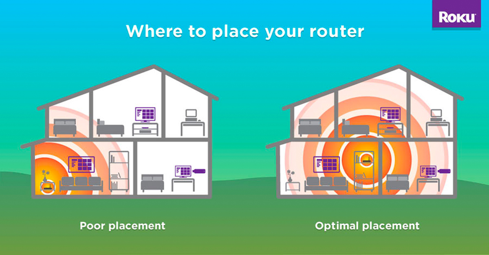

Optimizing Home Networks
Securing a home network can reduce the likelihood of viruses and attacks,
but it doesn't necessarily impact the performance of the network. If you
want to improve the performance of your network, there are a few things
you can try.
Location, Location, Location!
The physical placement of a router in a home can have an impact on the
performance of a network. The optimal placement depends on the unique
layout of each home. In a home with a lot of different devices,
a central location is usually best.
Generally speaking, devices closer to the router will have better
network performance, and devices further away will experience slower speeds
and less reliable service.

Optimal router placement (Source: Roku)
Prioritizing Traffic
When people use the Internet, they are often using it for a lot of different
purposes: streaming, social media, and email, to name a few. These different
applications take up different amounts of resources that the network has, leading
to overall lagginess and slowness on the network.
By prioritizing certain types of traffic (say, email over streaming), you can
tell your router how best to use the resources that it has.
Reflection Question
Where is the router placed in your home? Could you get better performance by
placing it somewhere else?